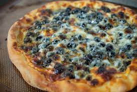

Home
Boba Pizza

Boba pizza is a new twist on the popular boba drink.
With toppings of black boba, mochi balls and honey.
Ingredients
- 1 cup of cooked boba pearls
- 1 cup of Mochi balls
- 1/4 cup of Honey
- 1 package of Pizza dough
- 1 cup of shredded mozzarella cheese
How to Make Boba Pizza
Here are the steps on how to make boba pizza:
- Preheat oven to 450 degrees F (230 degrees C).
- Grease a baking sheet.
- Roll out the pizza dough into a 12-inch circle.
- Spread the pizza sauce over the dough.
- Sprinkle the mozzarella cheese over the sauce.
- Top with the boba pearls, vegetables, Parmesan cheese, salt, and pepper.
- Drizzle with olive oil.
- Bake in the preheated oven for 15-20 minutes, or until the crust is golden brown and the cheese is melted and bubbly.
- Let cool for a few minutes before slicing and serving.
Tips:
- You can use any type of pizza dough you like, such as store-bought or homemade.
- If you don't have boba pearls, you can use tapioca pearls or other types of chewy candy.
- You can add any toppings you like to your boba pizza, such as pepperoni, sausage, mushrooms, onions, peppers, or olives.
- Enjoy!